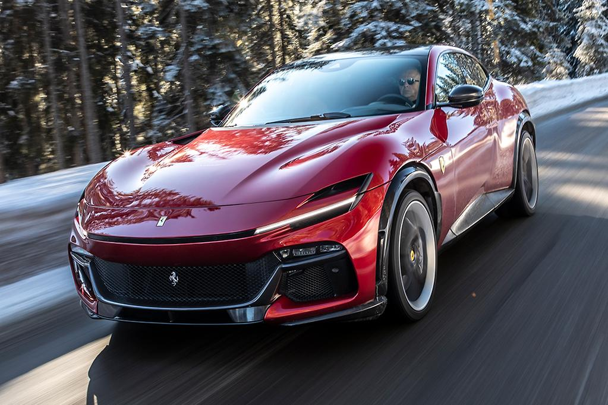
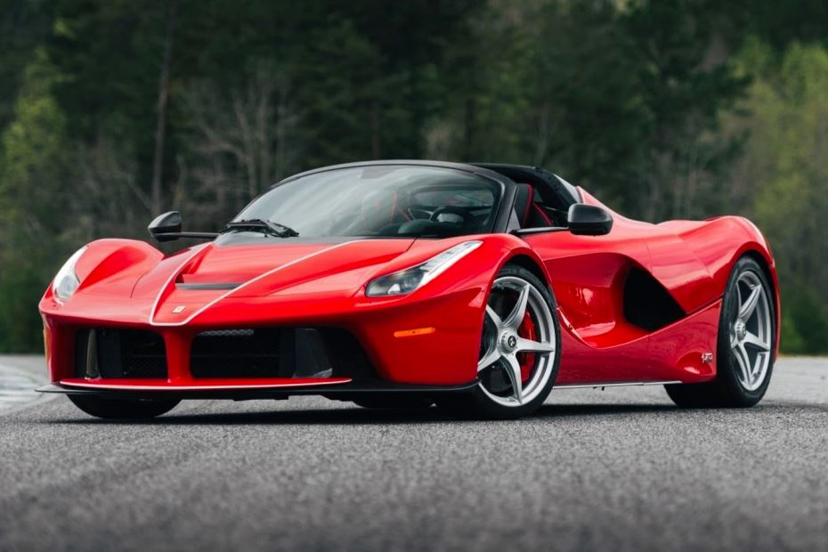
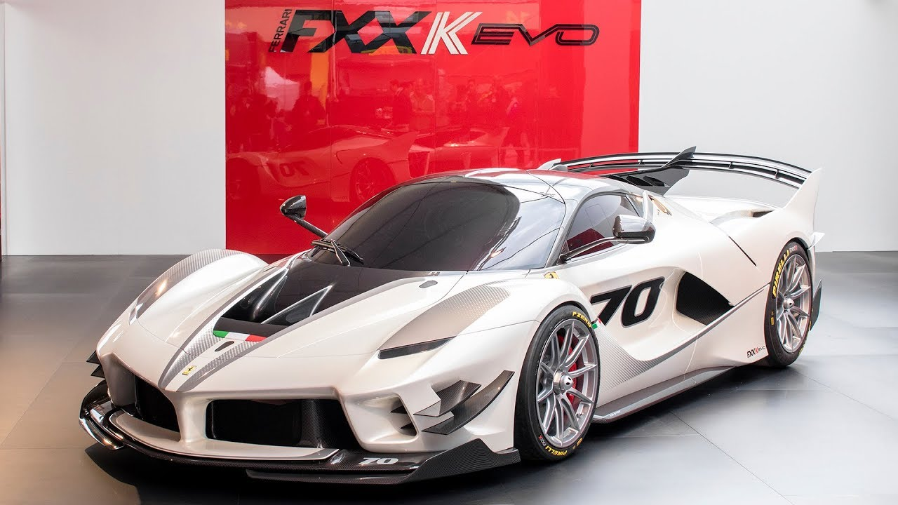

Purosangue
Far from being a me-too offering, the Purosangue is a completely fresh take on the genre, so Ferrari’s claim that it’s an FUV (Ferrari Utility Vehicle) rather than an SUV isn’t empty hyperbole. Due to land locally in the second half of this year, the stylish Purosangue comprehensively rewrites all dynamic metrics for what’s achievable by a 2.2-tonne, 1.6m-tall vehicle. Although blisteringly fast and cossetting, the Purosangue is slightly limited by a smallish 473-litre boot and lack of towing capability. You might also think its $728,000 starting price

LaFerrari Aperta
Powered by a naturally aspirated 6.3-liter V12 paired with an electric motor delivering a total of 950 HP (963 PS), and seven-speed dual-clutch transmission that sends power to the rear wheels, this example is finished in Rosso Corsa.

FXX K Evo
This fine 1:8 scale model of the Ferrari FXX K Evo has been handcrafted and finished in our workshops with the co-operation and assistance of Ferrari regarding original finishes, materials, archive imagery and drawings. The use of supremely accurate digital scanning of the original car has allowed us to perfectly recreate every detail at scale. Furthermore, it has undergone detailed scrutiny by both engineering and design teams to ensure complete accuracy of representation.